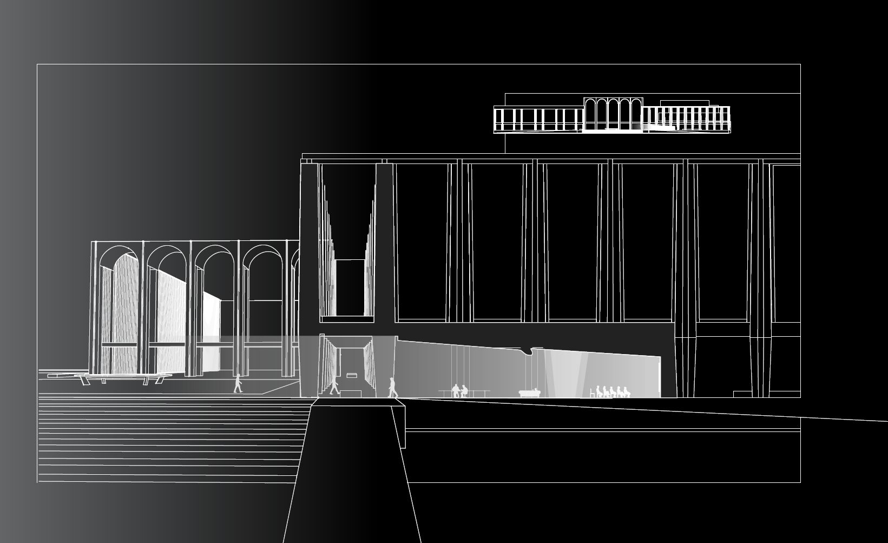
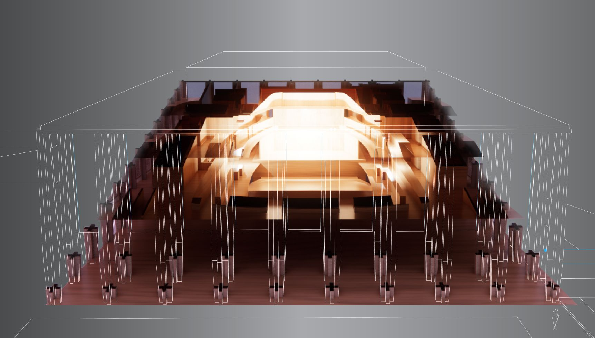
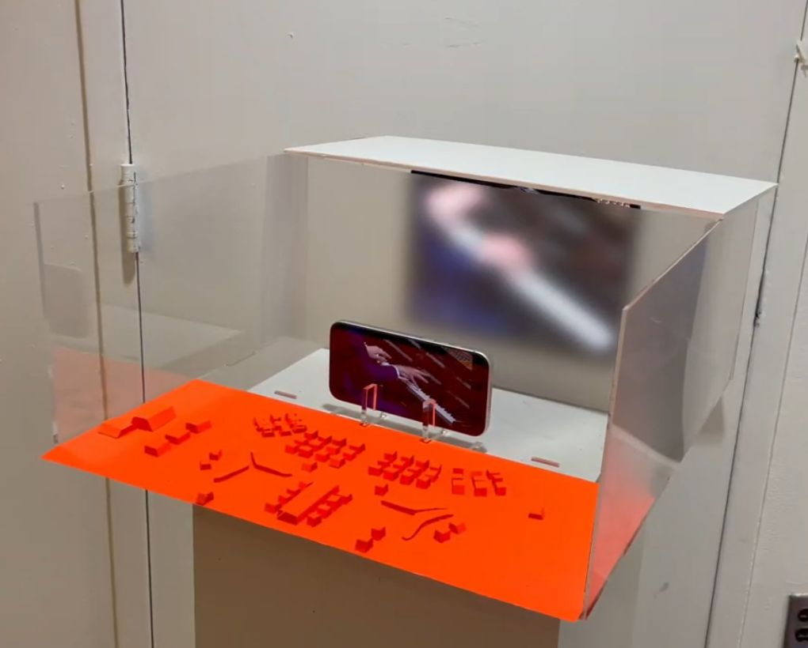
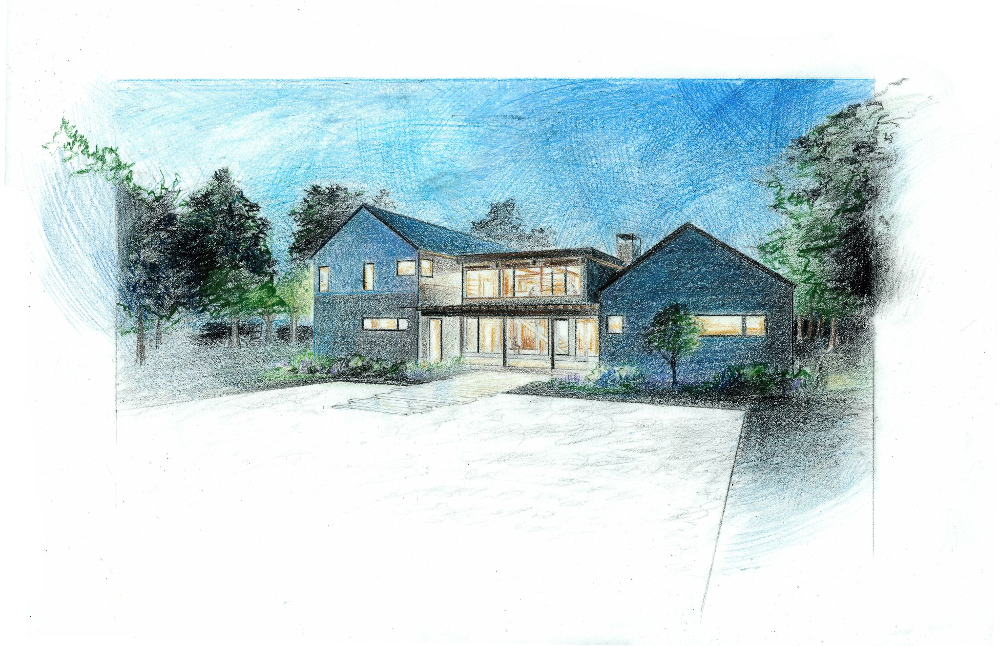

Architecture & Spatial Studies
Graduate Portfolio — 2026

Public/Private Interfaces
Lincoln Center, NY [cite: 1]
By projecting a livestream of concerts, the building extends music into the public space, making an exclusive experience accessible to all for free. [cite: 4, 12]

Perspective Render: Interior glow representing the shared experience of music. [cite: 5, 8]

Representational Model: Acrylic, Paper, and Foam Board. [cite: 9]
Selected Artwork

"Lot 9" House Rendering
Martha's Vineyard, MA [cite: 20, 24]
A hand-drawn study exploring the "late dusk" feeling when windows glow from the life contained within. [cite: 24]